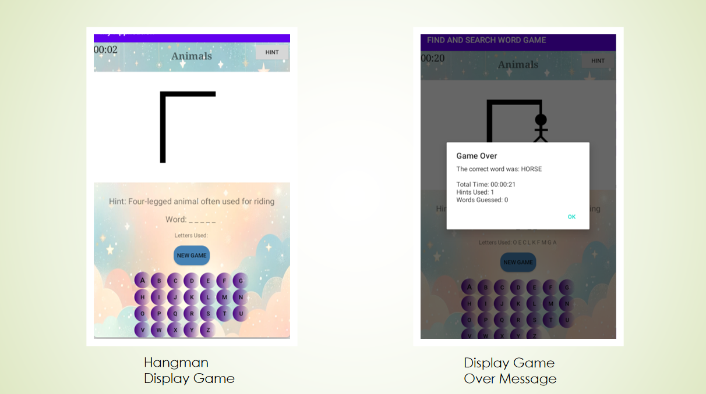

Final Year Project
-
Mobile Application Development
My final year project that uses xaml as the front end and Java as the back end to create a mobile application called Find and Search Word Game for learning English. The project aims to promote responsible gaming and learning behavior, engagement, and motivation in language learning, and effectiveness of vocabulary acquisition tools.

Above is the main page of the game.
This application includes two types of games: Word Search and Hangman. Both games offer different levels and 10 categories of titles.
In the Hangman game, players guess the word based on the given hint. If correct, the game displays the total time, hints used, and successful guesses. Incorrect guesses accumulate errors up to seven. Players can continue with accumulated errors until they either succeed or fail.
We offer 10 categories of titles and different levels for players to choose from.
The Word Search game at the easy level for the title "Animal." Vocabulary words to find are listed on the right, with varying levels of difficulty.
The result displays the time and hints used, which are saved to or retrieved from Firebase.